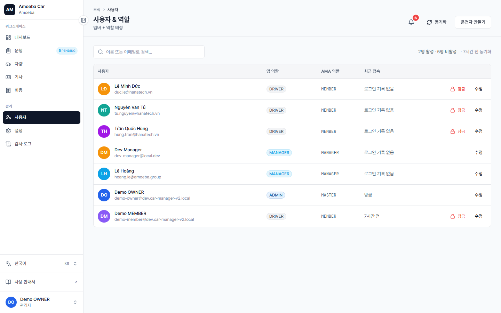
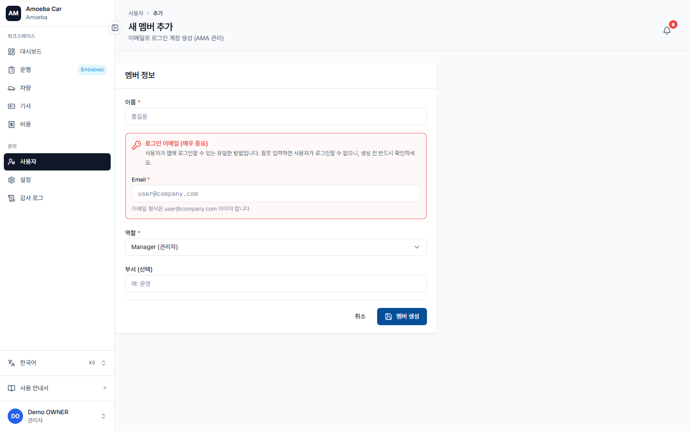

사용자 관리
- URL
/users·/users/new(초대) ·/users/[id]/edit- 중요
- 사용자 계정은 AMA (ama.amoeba.site) 소유입니다 — 관리자는 "초대"와 "앱 권한 부여"만 가능하며, 계정을 직접 생성하지 않습니다.
사용자 목록

각 사용자 행에 표시되는 정보:
- 아바타 + 이름 + 상태 레이블 (비활성/정지인 경우)
- 이메일 (AMA에 등록된 로그인 주소)
- 앱 역할: ADMIN / MANAGER / DRIVER (한 번도 로그인하지 않은 경우 "—")
- AMA 역할: OWNER / MASTER / MANAGER / MEMBER / VIEWER (고정폭 글꼴)
- 마지막 활동 시간
신규 멤버 온보딩 (메시지로 정보 전송)
2026-05-25 절차 업데이트: /users 페이지의
"+ 멤버 초대" 버튼은 제거되었습니다. 대신 관리자가 개인 메시지
채널(SMS / 카카오톡 / 텔레그램 / 이메일)로 멤버에게 직접 회사 정보를 보내면,
멤버가 본인 이메일로 /login에서 직접 로그인합니다.
시스템에서 별도 작업이 필요 없어 간단합니다 — 정확한 기업 코드(ent_code)만 전달하면 멤버가 자동으로 로그인할 수 있습니다.
1단계 — 기업 코드 확인
기업 코드는 시스템 설정 페이지의
"조직" 항목에 표시됩니다. VN01, AMOEBA-VN
같은 형식(대문자, 공백 없음). Amoeba 가입 시 부여받은 코드입니다.
2단계 — 멤버에게 메시지 전송
아래 템플릿을 복사해서 이름만 바꾸어 보내세요:
Chào [Tên],
Bạn đã được thêm vào hệ thống Amoeba Car Manager của công ty.
Cách đăng nhập:
1. Mở: https://apps.amoeba.site/app-car-manager-v2/login
2. Mã doanh nghiệp: VN01 ← thay bằng mã của bạn
3. Email: email của bạn (đã được Admin đăng ký trên AMA)
4. Bấm "Đăng nhập"
Sau khi vào hệ thống, bạn sẽ được tự động cấp quyền theo vai trò.
Cần hỗ trợ liên hệ: [Admin tên / email hoặc số điện thoại]3단계 — 멤버 자체 로그인
멤버가 기업 코드 + 본인 이메일로 /login에 접속하면 시스템이 자동으로:
car_users테이블에 사용자 레코드 생성 (없으면)- AMA 역할 → 앱 역할 매핑 (아래 표 참고)
- 역할에 맞는 홈 페이지로 리다이렉트
필수 조건: 멤버의 이메일이 본인 조직의 역할로 Amoeba에 먼저 등록되어 있어야 합니다. 없으면 AMA 관리자나 인사팀에 연락해 Amoeba 시스템에 먼저 등록한 후 로그인 안내를 전송하세요.
4단계 — 기사 프로필 추가 (기사인 경우)
기사가 첫 로그인 후 (/users에 사용자가 자동으로 나타남), 관리자가
/drivers/new에서 기사 프로필(운전면허, 등급,
만료일)을 만들어 방금 로그인한 사용자와 연결합니다.

/users/new 폼 — 직접 URL로 접근 가능(레거시)하지만 신규 절차에 따라 퀵 액세스 버튼은 제거되었습니다.AMA 역할 → 앱 역할 매핑
| AMA 역할 | 앱 역할 | 비고 |
|---|---|---|
| OWNER, MASTER | ADMIN | 시스템 전체 권한 |
| MANAGER | MANAGER | 차량 신청 + 개인 보고서 조회 |
| MEMBER, VIEWER | DRIVER | 자동 배정 — 사용자가 기사인 경우 /drivers/new에서 기사 프로필을 추가로 생성해야 합니다. |
앱 역할 변경
/users/[id]/edit으로 이동 → 앱 역할을 변경합니다. 단, AMA 역할이 최종 기준이므로 사용자가 로그인할 때마다 다시 동기화됩니다.
역할 변경은 감사 로그에 기록됩니다 — ROLE_CHANGE 항목으로 변경자 및 변경 시각이 남습니다. 권한 승격/강등 시 신중하게 처리하세요.